作品概要
診断とタロットを使い自分 に合う本に導くアプリ
20~25代ので一人暮らしを始め、孤独の時間は 自分の気分に深く浸りたい人 （自分の時間が欲しい人）
ページデザイン、アニメーション、画面遷移を実装し、Node.js（Express）で構築したバックエンドとGoogle Books APIを連携させ、 カードの結果に応じておすすめ書籍を取得・表示する機能を開発しました。
授業時間を中心にチームで取り組み、約2か月かけて制作しました。
TypeScript、JavaScript、React 、Node.js、Expo
工夫した点
ユーザーが楽しみながら利用できるよう、 画面遷移やアニメーションを工夫し、 タロットカードを引くワクワク感を演出しました。バックエンドとGoogle Books APIを連携し、カードごとに異なるおすすめ書籍を表示できるよう実装しました。APIの取得に失敗した場合でも表示できるよう、フォールバック処理も取り入れています。
学んだこと
React Nativeによるアプリ開発だけでなく、 Node.jsを用いたバックエンドとの連携やAPI通信の流れを学びました。 チーム開発を通して、 役割分担や進捗共有などコミュニケーションの重要性も実感しました。
完成デザイン
世界観を統一するために、配色・タイポグラフィ・アニメーションを意識し、
シンプルで操作しやすいデザインに仕上げました。
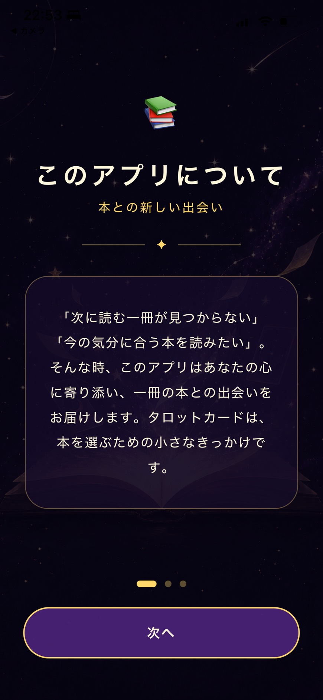
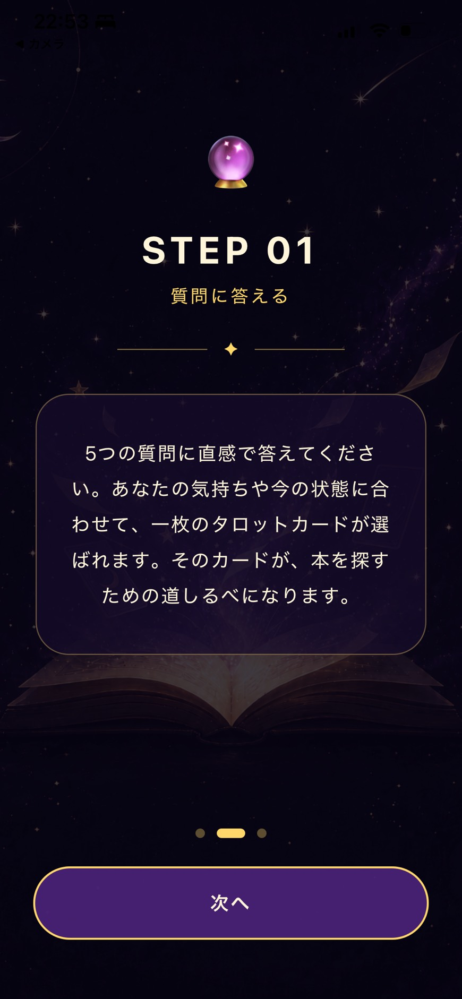
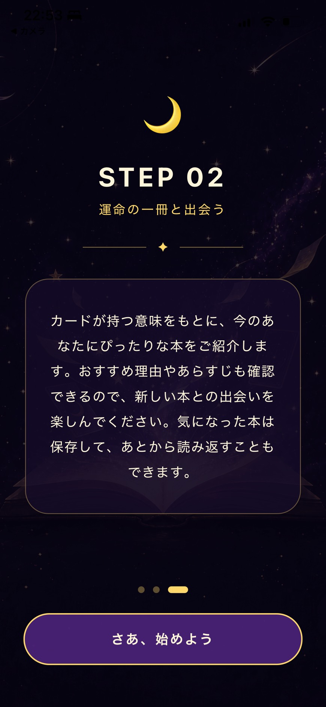
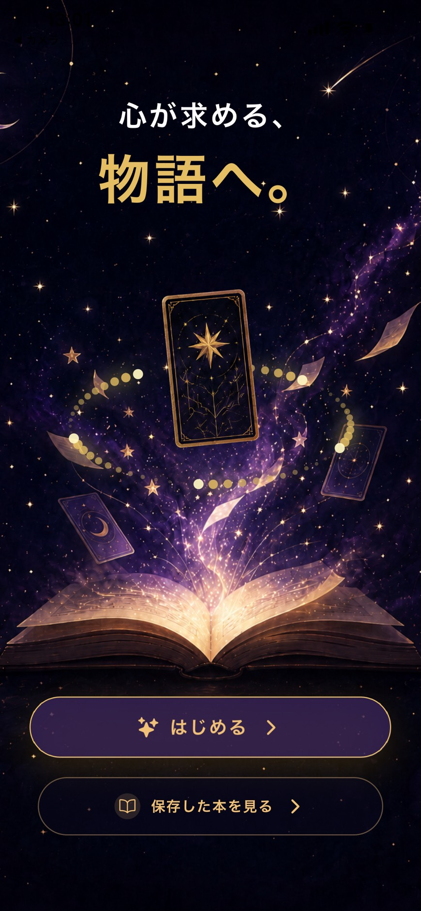
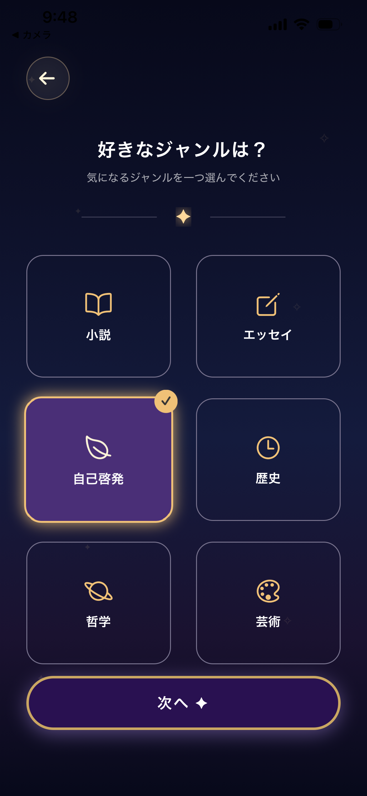
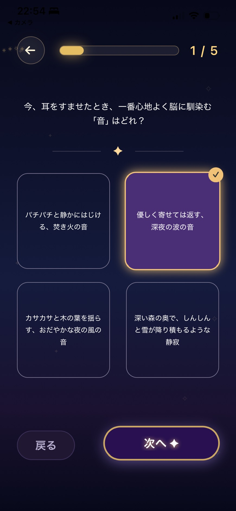
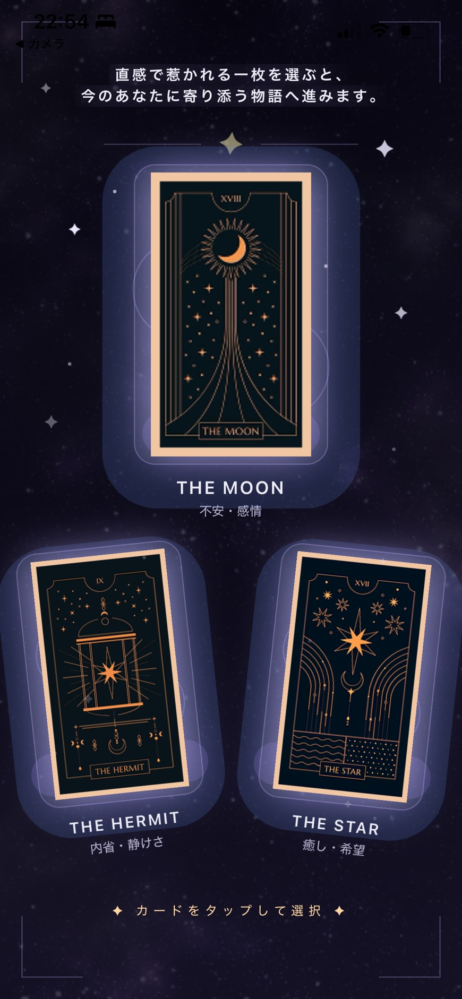
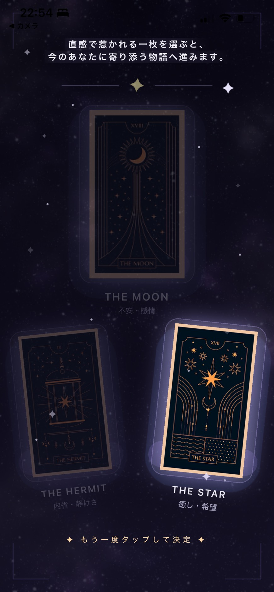
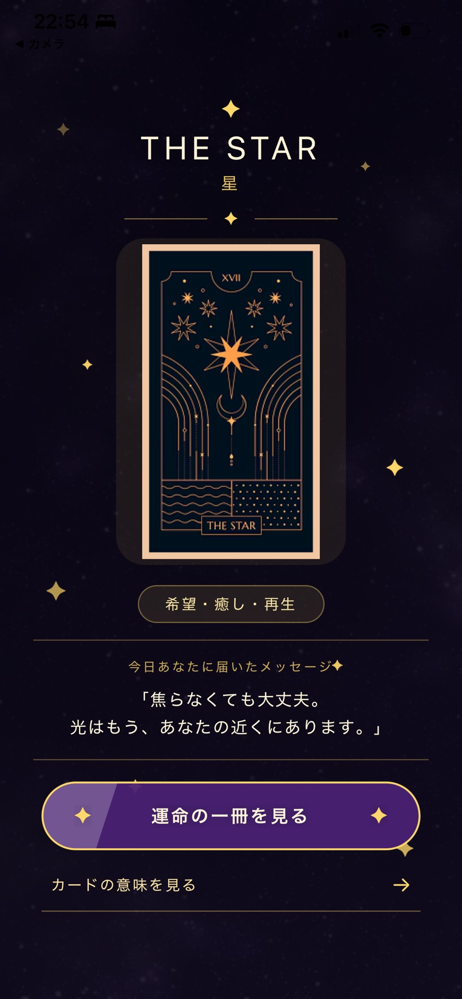
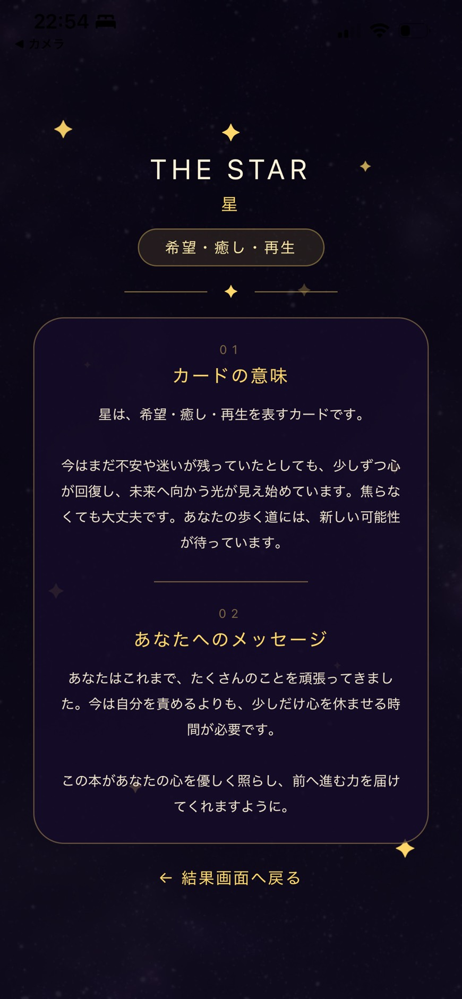
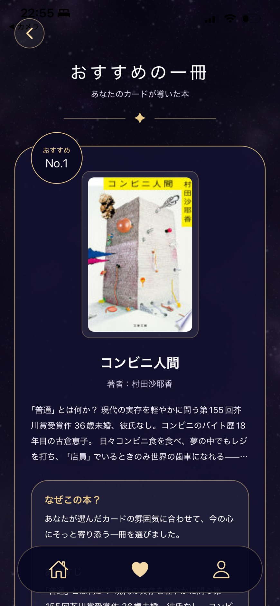
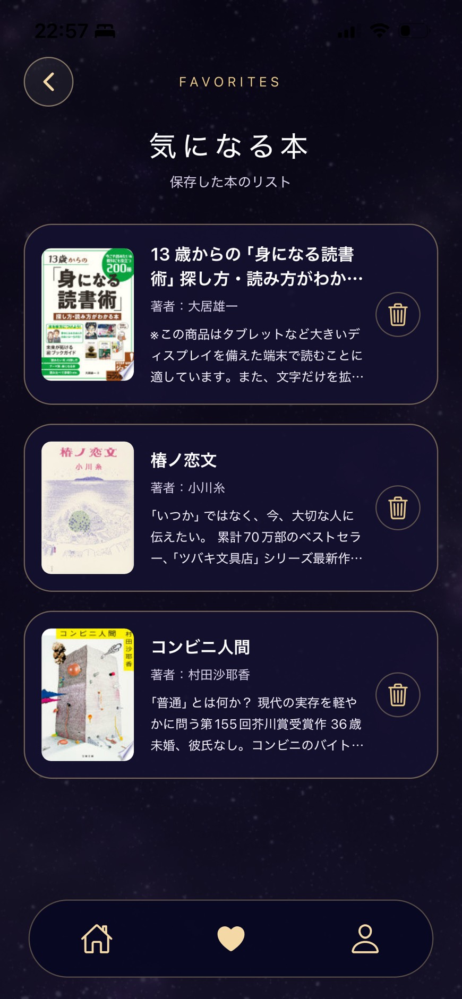